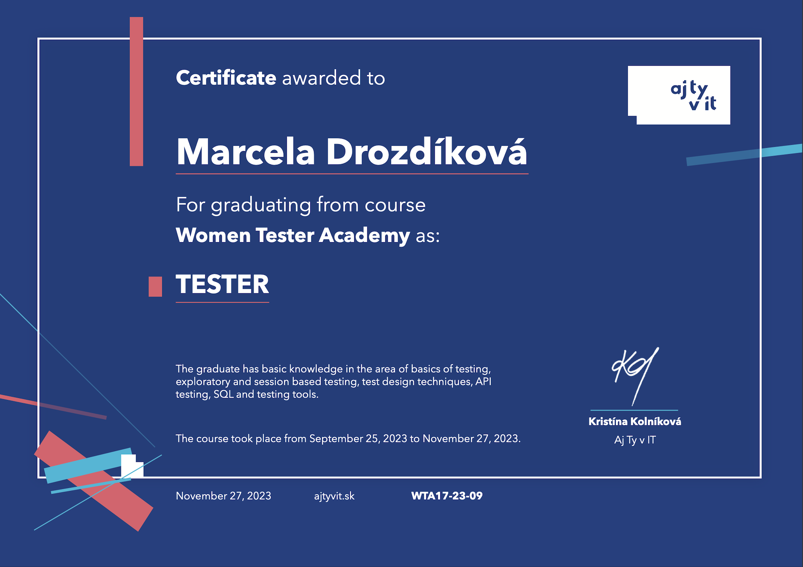
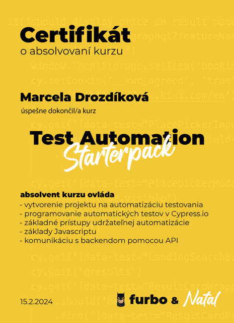

O mne
Som absolventkou testerskej akadémie (Aj Ty v IT) a testerské vedomosti a zručnosti som si rozšírila na kurze Test Automation Starterpack (furbo.sk), kde som sa učila programovať automatické testy v Cypress.io a tiež som aktívnou členkou komunity uTest.
V predchádzajúcom zamestnaní som pracovala ako hlavný energetik / analytik. Okrem iného som sa podieľala na tvorbe interného softvéru a práve jeho testovanie, spolupráca s vývojármi, hľadanie bugov a snaha odbornejšie sa ponoriť do danej problematiky ma inšpirovali k absolvovaniu kurzov v oblasti testovania. V minulosti som spravovala internetový obchod s oblečením. Verím, že moje skúsenosti a vedomosti, vášeň pre túto oblasť a chuť posúvať sa dopredu, Vás inšpirujú dosadiť ma na ponúkanú pracovnú pozíciu.
Kontakt
e-mail: drozdikova.m@gmail.com
☎: +421 911 174 804
Pracovné skúsenosti
-
MD Company - Obchodník / Špeditér (2023 - 2023)
denná komunikácia v anglickom jazyku s obchodnými partnermi slovom aj písmom, organizácia prepráv, akvizícia nových klientov, práca s internou databázou -
OSBD Trebišov - Energetik / Analytik (2017 - 2023)
testovanie softvéru, vyhotovenie ročného vyúčtovania, pravidelný monitoring a analýza spotrieb energií, vedenie evidencie, vyhodnocovanie efektívnosti využívania energie a úspornosti, spracovanie faktúr, zabezpečovanie pravidelného servisu určených meradiel a koordinácia týchto činností, komunikácia s dodávateľmi, komunikácia s vlastníkmi a plnenie ich požiadaviek, vybavovanie reklamácií -
TIVAT - čašňík / prevádzkar (2015-2017)
-
TV Zemplín - Redaktorka
-
Obiettivo Tropici - Animátor voľného času
Vzdelanie & kurzy
Vzdelanie:
Vysoká škola DTI - Ekonómia a manažment
Stredná odborná škola Kežmarok - Veterinárne zdravotníctvo a hygiena
Kurzy:
Test Automation Starterpack (furbo.sk) - automatizácia testovania
Women Tester Academy (Aj ty v IT) - softvérové testovanie
SQL Academy (Aj ty v IT) - komunikácia s databázami
Women Data Academy (Aj ty v IT) - základy dátovej analytiky, základy Python
Slovenský metrologický ústav: Štátne metrologické skúšky - Certifikát 4574/19 (zástupca registrovanej osoby)
Slovenský metrologický ústav - montáž meračov teplej a studenej vody
Kurz energetikov - Slovenský zväz bytových družstiev
Podvojné účtovníctvo - princípy účtovania pre obchodné spoločnosti
Jazyk & zručnosti
-
šport
-
jazdectvo
- 
- 
Jazyky:
Anglický jazyk: B2 / C1
Nemecký jazky:A1
Zručnosti: